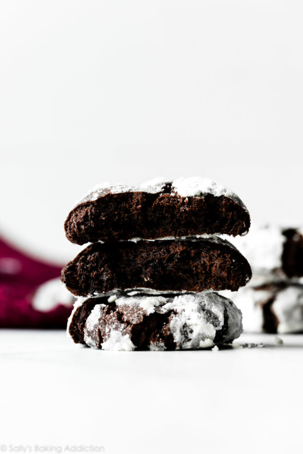

Double Chocolate Crinkle Cookies

Christmas Cookies Sure to Impress!
These double chocolate crinlke cookies are delicious and easy to make.
They will be sure to impress at any christmas party!. Made with simple
ingrediants.
Ingrediants
- 1 cup (125g) all-purpose flour (spoon & leveled)
- 1/2 cup + 2 Tablespoons (51g) unsweetened natural cocoa powder
- 1 teaspoon baking soda
- 1/8 teaspoon salt
- 1/2 cup (1 stick; 115g) unsalted butter, softened to room temperature
- 1/2 cup (100g) granulated sugar
- 1/2 cup (100g) packed light or dark brown sugar
- 1 large egg, at room temperature
- 1 teaspoon pure vanilla extract
- 1 cup (180g) mini or regular size semi-sweet chocolate chips
- 3 Tablespoons (35g) granulated sugar for rolling
- 1 cup (120g) confectioners sugar, for rolling